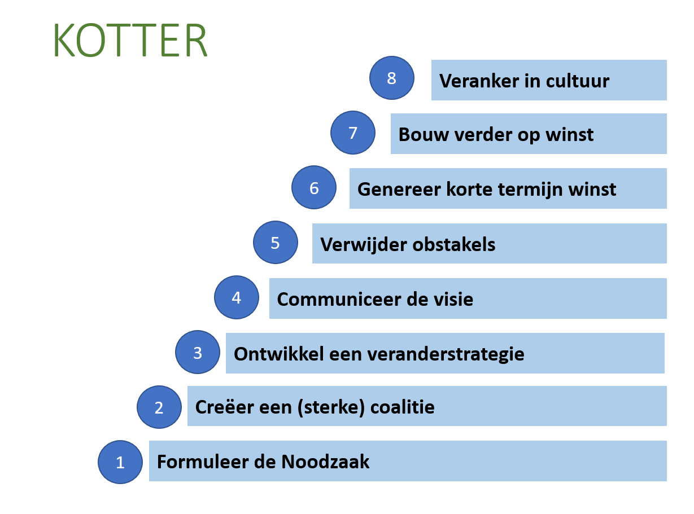

Acht veranderstappen van Kotter¶
Essentie¶
John Kotter heeft 8 succesfactoren voor verandering beschreven. Volgens dit model zijn alle 8 factoren nodig, en door deze in een logische volgorde aandacht te geven, ontstaan 8 veranderfasen organisch.

Je begint onderaan, en vraagt jezelf af hoe je telkens het doel bereikt in de huidige situatie.
Fase 1: zorg voor voldoende urgentiegevoel (create a sense of urgency)¶
Urgentie creëeren, zet financiele prikkels in, creëer competitie, maak mensen verantwoordelijk. schreeuw het van de daken, het mag creatief.
Kotter benadrukt emotie als motor voor verandering (‘see-feel-change’) in plaats van alleen ratio (‘analyse-think-change’).
Urgentiebesef en energie genereer je door emoties als hoop, vertrouwen, optimisme en enthousiasme op te wekken.
Een van de meest effectieve manieren is door de bril van de klant naar de organisatie te kijken en een krachtig ideaal toekomstbeeld te maken.
Positieve emoties zorgen hierbij eerder voor een urgentiegevoel dan klachten op te lezen.
Fase 2: vorm een leidende coalitie (create a guiding coalition)¶
Door een team te vormen met een groep enthousiaste mensen uit de volle breedte van de organisatie, kan je verandering beginnen. Kotter noemt dit de 'leidende coalitie'. Dit zijn mensen met formele en informele invloed, in de organisatie, maar tegelijkertijd ook hun eigen perspectief en kritiek kunnen toevoegen aan de plannen.
Fase 3: ontwikkel visie en strategie (create a vision for change)¶
Samen met deze 'leidende coalitie', wordt een concreet, realistisch en eenvoudige visie gevormd.
Aandachtspunten in deze fase: • Maak duidelijk waarom verandering nodig is • Ontwikkel en analyseer de verandervisie • Verduidelijk de rol van het team bij het ontwikkelen en verduidelijken van de visie. • Plan het veranderproces
Fase 4: communiceer en creëer zekerheid (communicate the vision)¶
Onzekerheid vormt zich vanaf het begin van de lichtste geruchten over verandering. Creëer een gevoel van zekerheid door de organisatie op een duidelijke en geloofwaardige manier informatie te voorzien over de aanstaande veranderingen. Een gevoel van veiligheid is een essentiële voorwaarde om gedrag te kunnen bespreken.
Management kan hierin voorbeeld geven door zich kwetsbaar, eerlijk en open op te stellen. Doordat managers hier eigen gedrag (en daarmee de cultuur) aan de kies voelen, scheppen ze hiermee de start van een echt dialoog van belanghebbende met persoonlijke betrokkenheid.
Fase 5: creëer de juiste randvoorwaarden (remove obstacles)¶
Zonder langdurige en onvoorwaardelijke steun is elke (cultuur)verandering gedoemd te mislukken. Een draagvlak voor verandering is hierbij essentieel.
De belangrijkste is hierbij commitment vanuit de top.
Het wegwerken van belemmerende factoren voor medewerkers zoals verouderde beoordelings- en beloningssystemen, belemmerende huisvesting, kantoorinrichting en overdadige faciliteiten voor managers
Fase 6. Creëer korte termijn successen (create short term wins)¶
Door het creëeren van kansen voor "quick wins", wordt het effect en de motivatie gelijk voor iedereen zichtbaar.
Dit kan door een deel van het einddoel te behalen zijn, of het volledig en succesvol implementeren in een sectie van de organisatie.
Het behalen van korte mijlpalen op het pad naar het uiteindelijke doel, stimuleert geloof in het succes van de nieuwe visie en strategie.
Fase 7. Bewaak de verandering (consolidate improvements)¶
Bewaak de verandering, het feit dat er successen worden behaalt is een goed teken, maar in deze fase is het belangrijk om niet af te zwakken. Onderzoek wat werkt, verfijn het proces en breng veranderingen door naar andere delen van de organisatie.
De 'sense of urgency' moet hierbij goed op peil gehouden worden.
Fase 8. Borg de verandering (anchor the changes)¶
Borgen van de veranderingen, het verankeren van de nieuwe situatie is belangrijk. Door regelmatig en systematisch te meten, evalueren en bijsturen, kan de verandering en de nieuwe sitatie gemonitord en door doorgaans verbeterd worden.
In de praktijk is vooral deze fase het gevaarlijkst voor het verwateren van verandering, want door het niet controleren kan het afzwakken en het eerdere gedrag de kop weer opduiken.
Relatie met Veranderkunde¶
Door deze verschillende fases te herkennen kan je een goede op maat gemaakte strategie maken die de verandering tot een succes kan maken.
Relatie met andere modellen¶
- VGWI (Verandering Gedrag Werkelijkheid Interventies)
- Lewin's freeze unfreeze
Ook koppelt kotters model mooi met Lewin's Freeze-Unfreeze model, zeker als je de 8 stappen weer verdeeld in de volgende 3 grote fasen:
- Creëer een klimaar van succes(freeze)
- Betrek mensen en breng de ... op gang. (change)
- Implementeren en ondersteunen (Unfreeze)

zzzzzzzzzzzzzzzzzzzzzzzzzzz